하이브리드 검색과 구조 보존 인덱싱으로 Recall@5 100%를 달성한 기술 경과
폐쇄망 온프레미스 환경에서 경량 LLM과 하이브리드 검색을 결합하여 기술 문서 질의응답 시스템을 구현했습니다. 4단계 진화를 거쳐 Recall@5 100%, MRR 0.967을 달성했습니다.
이 보고서는 RAG 파이프라인의 설계 판단, 기술적 구현, 실험 결과를 다룹니다. "검색이 왜 잘 되는지"에 대한 기술적 근거를 제시하는 문서입니다.
키워드 검색에서 에이전틱 RAG까지 단계적으로 발전했습니다.
| 단계 | 방식 | Recall@5 | 핵심 변경 |
|---|---|---|---|
| Phase 1 | 키워드 검색 (BM25) | 85% | 페이지 단위 인덱싱, 단순 프롬프트 |
| Phase 2 | 섹션 레벨 청킹 | 90% | h1~h3 기준 분할, 섹션 네비게이션 |
| Phase 3 | 하이브리드 + 리랭킹 | 100% | FAISS 벡터 + BM25 RRF 병합, Cross-encoder |
| Phase 4 | 질문 라우팅 + Agentic | 100% | 질문 유형 분류, 쿼리 분해, 반복 검색 |

RAG 파이프라인 전체 흐름 — 질문 입력부터 응답 생성까지
콘텐츠 업로드 시 다음 순서로 인덱스를 생성합니다.
| 순서 | 단계 | 처리 내용 |
|---|---|---|
| 1 | HTML 파싱 | h1~h3 기준 섹션 분할. 테이블 → GFM Markdown, MathML → LaTeX 변환. |
| 2 | 텍스트 추출 | 태그 제거 + 구조 보존. 최대 3,200자(~800토큰), 최소 100자 필터링. |
| 3 | 검색 인덱스 | 섹션별 키워드 인덱스 생성 (search-index.json). |
| 4 | 벡터 인덱스 | bge-m3로 1024차원 임베딩. FAISS IndexFlatL2에 저장. 배치 32건 단위. |
기술 문서에는 테이블, 수식, 병합셀이 빈번합니다. 단순 태그 제거는 구조 정보를 파괴하므로, 변환 과정에서 구조를 보존합니다.
| 원본 구조 | 변환 결과 | 효과 |
|---|---|---|
| HTML 테이블 | GFM Markdown 테이블 | 행/열 관계 보존. 임베딩 정확도 51.9% (최고). |
| MathML 수식 | LaTeX 표기 | 230+ 유니코드 매핑. 수학적 의미 보존. |
| 병합셀 테이블 | Key-Value 형식 | colspan/rowspan 정보를 텍스트로 풀어 표현. |
키워드(BM25)와 벡터(FAISS)를 RRF로 병합합니다.
두 검색 결과의 순위를 역수 가중 합산하여 최종 순위를 결정합니다.
| 파라미터 | 값 | 설명 |
|---|---|---|
| keyword_weight | 0.3 | 키워드 검색 가중치 |
| vector_weight | 0.7 | 벡터 검색 가중치 |
| k (RRF 상수) | 60 | 순위 역수 계산의 분모 오프셋 |
| MIN_VECTOR_SCORE | 0.48 | 벡터 유사도 하한 (노이즈 차단) |
RRF 결과 상위 15건(top_k x 3)을 bge-reranker-v2-m3 Cross-encoder로 재정렬하여 최종 5건을 선정합니다. Cross-encoder는 질의와 문서를 함께 입력받아 Bi-encoder보다 정밀한 관련도를 판단합니다.
| 방식 | Recall@5 | MRR | 비고 |
|---|---|---|---|
| 키워드 단독 (BM25) | 85% | 0.750 | 용어 불일치 시 누락 |
| 벡터 단독 (bge-m3) | 90% | 0.833 | 의미 검색 가능, 순위 편차 |
| 하이브리드 (RRF) | 100% | 0.967 | 양쪽 장점 결합 |
20건 테스트셋 기준 (한/영 혼합 기술 질의)
질문 유형에 따라 검색 전략을 분기합니다. (Phase 4)
| 유형 | 예시 | 처리 전략 |
|---|---|---|
| SIMPLE | "MIL-STD-961E 목적은?" | 단일 검색 → 직접 답변 |
| COMPARE | "A규격과 B규격의 차이는?" | 쿼리 분해(1~3개) → 병렬 검색 → 병합 답변 |
| REASON | "이 구조의 장단점은?" | Agentic RAG — 최대 3회 검색-판단-재검색 루프 |
| CHAT | "안녕하세요" | 검색 없이 직접 응답 (5자 미만 자동 분류) |

질문 유형별 처리 전략 분기 (Phase 4)
REASON 유형 질문에 대해 LLM이 검색 결과의 충분성을 판단합니다. 컨텍스트가 부족하면 검색어를 재구성하여 추가 검색을 수행합니다. 최대 3회 반복 후 수집된 컨텍스트로 최종 답변을 생성합니다.
| 설정 | 값 | 설명 |
|---|---|---|
| 세션 관리 | 인메모리 LRU | 최대 100세션, 60분 유휴 만료 |
| 대화 이력 | 최대 50건 | 시스템+어시스턴트+사용자 메시지 |
| 토큰 예산 | 8,000자 | 시스템 500 + 컨텍스트 5,000 + 이력 2,000 + 질문 500 |
| 쿼리 재작성 | Ollama | 후속 질문을 독립 쿼리로 변환 (실패 시 원본 사용) |
각 단계에서 실패 시 자동으로 대안 경로를 선택합니다.
| 실패 지점 | 폴백 동작 |
|---|---|
| 벡터 검색 실패 | 키워드 검색으로 전환 |
| 리랭커 실패 | 원본 RRF 순위 그대로 사용 |
| 쿼리 재작성 실패 | 원본 질문 + 키워드 결합 |
| 임베딩 서버 다운 | 키워드 전용 모드 (벡터 비활성) |
| LLM 타임아웃 (60초) | 에러 메시지 반환, 세션 유지 |
| 항목 | 일반 RAG | 본 시스템 |
|---|---|---|
| LLM | OpenAI GPT-4, Claude | Ollama gemma3 (로컬, 폐쇄망) |
| 벡터 DB | Pinecone, Weaviate | FAISS 인메모리 (외부 서비스 불필요) |
| 세션 저장 | Redis, PostgreSQL | 인메모리 LRU (인프라 최소화) |
| 패키지 설치 | pip install (인터넷) | 오프라인 wheel 패키지 |
| 청킹 전략 | 고정 크기 (512토큰) | 섹션 기반 (h1~h3, 의미 단위) |
| 인덱싱 | 텍스트 추출 (태그 제거) | 구조 보존 (테이블 → MD, 수식 → LaTeX) |
| 한계 | 향후 방향 |
|---|---|
| 테스트셋 규모 (20건) | 대규모 평가셋 구축, 사용자 피드백 기반 자동 평가 |
| 경량 LLM 한국어 정밀도 | 모델 업그레이드 시 프롬프트 재최적화 |
| 이미지/도면 검색 불가 | 멀티모달 임베딩 도입 검토 |
| 단일 문서 컬렉션 | 서브시스템별 독립 인덱스 구성 (Plan-25) |